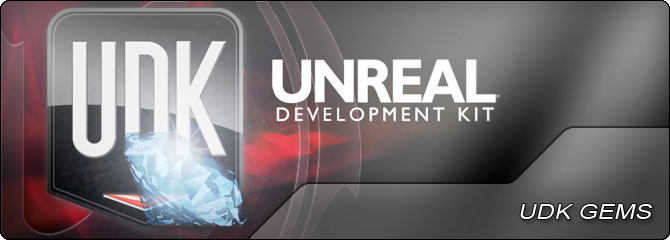

UDN
Search public documentation:
DevelopmentKitGemsKR
English Translation
日本語訳
中国翻译
Interested in the Unreal Engine?
Visit the Unreal Technology site.
Looking for jobs and company info?
Check out the Epic games site.
Questions about support via UDN?
Contact the UDN Staff
日本語訳
中国翻译
Interested in the Unreal Engine?
Visit the Unreal Technology site.
Looking for jobs and company info?
Check out the Epic games site.
Questions about support via UDN?
Contact the UDN Staff
UE3 홈 > UDK 젬
UDK 젬

- MOBA 스타터 키트 - 언리얼 엔진 3 로 MOBA (Multiple Online Battle Arena) 류 게임을 만들어 보는 스타터 키트입니다.
- 플랫포머 스타터 키트 - 언리얼 엔진 3 로 플랫폼형 게임을 개발해 보는 스타터 키트입니다.
- 레이서 스타터 키트 - 언리얼 엔진 3 로 레이싱 게임을 개발해 보는 스타터 키트입니다.
- PhysX 파티클 스타터 키트 - UDK 에 제공된 UTGame 에 PhysX 파티클을 추가해 보는 스타터 키트 예제입니다.
- 실시간 전략 스타터 키트 - 언리얼 엔진 3 (모바일)로 실시간 전략 게임을 개발해 보는 스타터 키트입니다.
- 맵 전용 디버깅 옵션 추가하기

 - 언리얼 에디터에 노출되는 레벨 디자이너 친화적 디버깅 옵션을 추가하는 법입니다.
- 언리얼 에디터에 노출되는 레벨 디자이너 친화적 디버깅 옵션을 추가하는 법입니다.
- 화면위 표식 추가하기 - 플레이어에게 유용한 위치 알리미 기능을 하는 화면위 표식을 추가하는 법입니다.
- 액터 선택 박스나 브래킷 만들기 - HUD 를 사용하여 액터 주변에 선택 박스를 렌더하기
- 마우스 인터페이스 만들기 - 게임에 월드와 상호작용하는 마우스 커서 추가하기
- Canvas 키즈멧 노드 만들기 - HUD 위에 그리는 키즈멧 노드 만들기
- Concatenate Strings 키즈멧 노드 만들기 - 키즈멧 안에서 두 문자열을 합치는 기능을 하는 키즈멧 노드 만들기
- For 루프 키즈멧 노드 만들기 - 키즈멧 안에서 루프 노드 만들기
- Iterator 키즈멧 노드 만들기 - 레벨에 있는 액터 검색 기능을 하는 키즈멧 노드 만들기
- 캐릭터 라이팅 - 캐릭터 라이팅 이쁘게 하기
- 뒤틀린 리플렉션 만들기 - 씬을 반사하는 머티리얼 만들기
- 다이내믹 노멀맵 - 하이트맵에서 노멀맵을 생성해낼 수 있는 머티리얼 만들기
- 인테리어 매핑 - 인테리어 매핑된 머티리얼 제작법입니다.
- 패럴랙스 오클루디드 매핑 - 패럴랙스 오클루디드 (시차에 가려진) 머티리얼 만들기
- 실시간 디포메이션 - 실시간 변형이 가능한 표면 만드는 법입니다.
- 가려진 액터 렌더하기 - 다른 오브젝트 뒤에 가려진 액터를 고스트 렌더링하기
- 라이트 함수 사용하기 - 깜빡이, (나이트클럽처럼) 번쩍이는 빛 등을 만들기 위해 여러가지 방법으로 라이트 함수 사용하기 입니다.
- 게임 상태 저장하고 로드하기 - 유연한 게임 상태 저장 / 로드 시스템을 만드는 법입니다.
- Game Center/Steamworks 키즈멧 노드 - Game Center 나 Steamworks 와의 인터페이스 역할을 하는 키즈멧 노드를 만들고 사용하는 법입니다. - 따끈!
- 동적인 내비게이션 메시 장애물 만드는 법 - AI 가 우회할 수 있도록 내비게이션 메시에 장애물 추가하기
- HUD 왜곡 추가하기 - 포스트 프로세싱에 왜곡 패턴을 추가하는 법입니다.
- 키즈멧이나 언리얼스크립트를 통한 포스트 프로세스 이펙트 제어법 - 포스트 프로세싱 이펙트 제어 키즈멧 노드 만들기
- 소벨 에지 디텍션 포스트 프로세스 이펙트 만드는 법 - 소벨 연산을 사용하여 카툰식 외곽선을 그리는 포스트 프로세스 이펙트 만들기
- 단순 얼룩 그림자 만들기 - 액터에 단순한 그림자 추가하기
- 애플 퀵타임에서 FBX 보기 - 애플 퀵타임 무비 플레이어에서 FBX 파일 보는 방법입니다.
- 액터에 스프라이트, 메시, 파티클 이펙트 추가하는 법 - 레벨에 놓인 액터에 스프라이트, 메시, 파티클 이펙트 추가하기
- 모듈식 폰 생성하는 법 - 부위별로 교환할 수 있는 폰 만들기